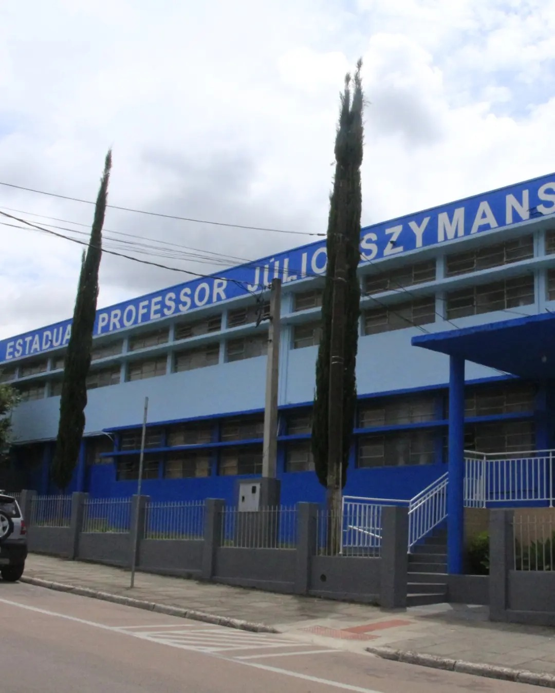

O colégio é nomeado em homenagem ao Prof. Dr. Júlio Szymanski, um imigrante polonês notável, com atuação acadêmica e científica no Brasil. A vida dele é bastante celebrada pela escola, que já realizou exposições e eventos culturais centrados na sua trajetória.
Em 2017, nas comemorações dos 61 anos, houve palestra, exposição "Juliusz Szymanski — um polonês entre dois continentes" e encenação da chegada dos imigrantes poloneses ao Brasil.
